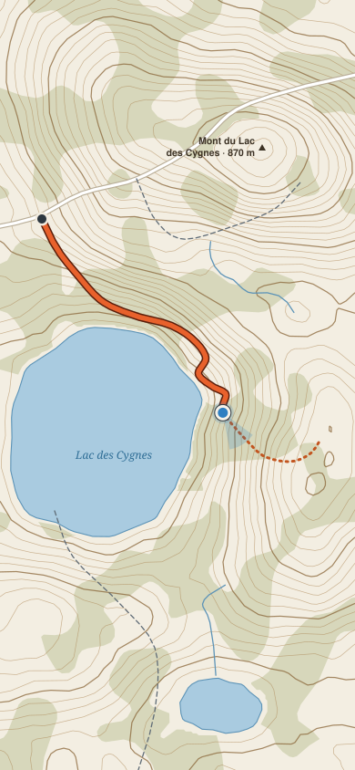
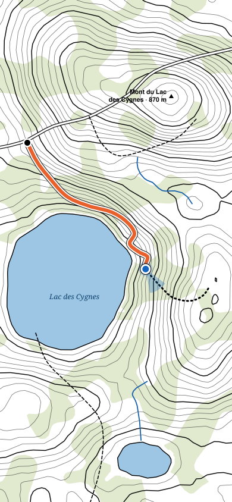
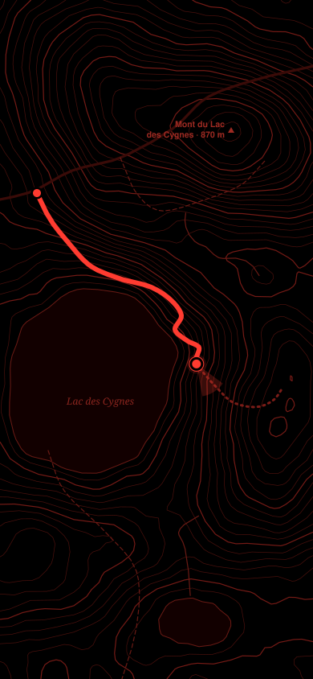

Display
Sunlight and Night are opt-in. Normal is the default.
Normal
Paper & stone

Sunlight
Max contrast

Night
Red only
Auto night at sunset
On at 19:02 tonight, off at sunrise
Sunlight while recording
Switch on when brightness is at maximum
For a true red-only screen, use iOS Colour Filters